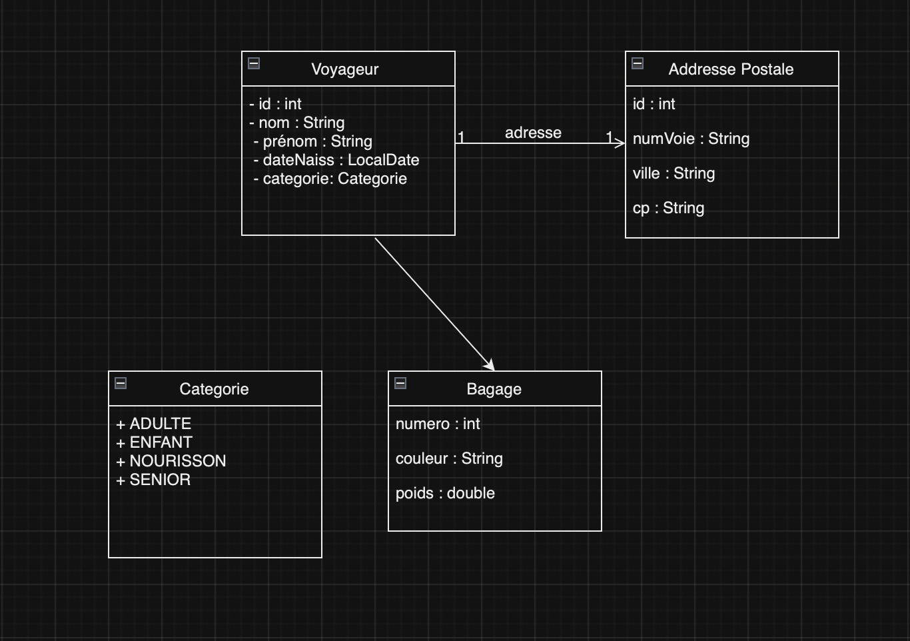

Réalisation : Easyline
Description 📖:
Le projet a été réalisé en deux temps, une première partie à été réalisé sous les consignes de M.Frebourg sur son site, et la deuxième partie à été réalisé sous les consignes de Mme.Abdelmoula qui à développer les consigne de la première partie de la réalisation. Le projet devait être réalisé seul et avec des contraintes de temps.
Objectifs 🎯:
L'objectif de cette réalisation est de monter en compétences en réalisant un projet Java utilisant une base de donnée et prenant en charge différents voyageurs et leurs valises et des agences de voyages tels que montrer ci-dessous.
Outils 🛠️:
 VScode pour la réalisation avec M.Frebourg
VScode pour la réalisation avec M.Frebourg- IntelliJ pour la réalisation avec Mme.Abdelmoula
 Projet réalisé en Java
Projet réalisé en Java